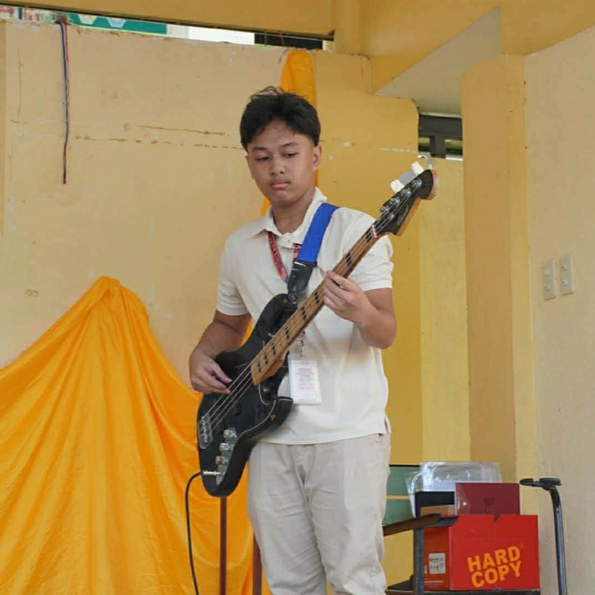
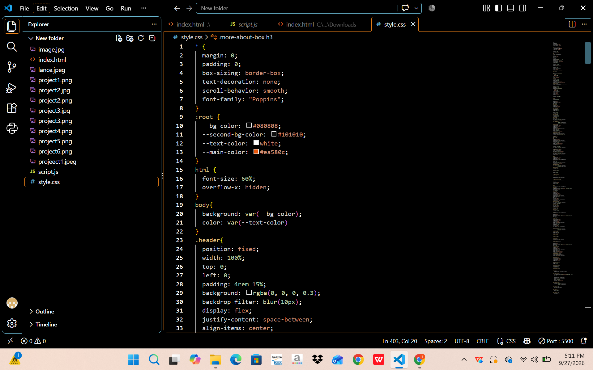
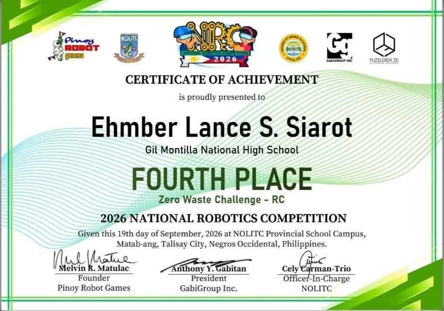
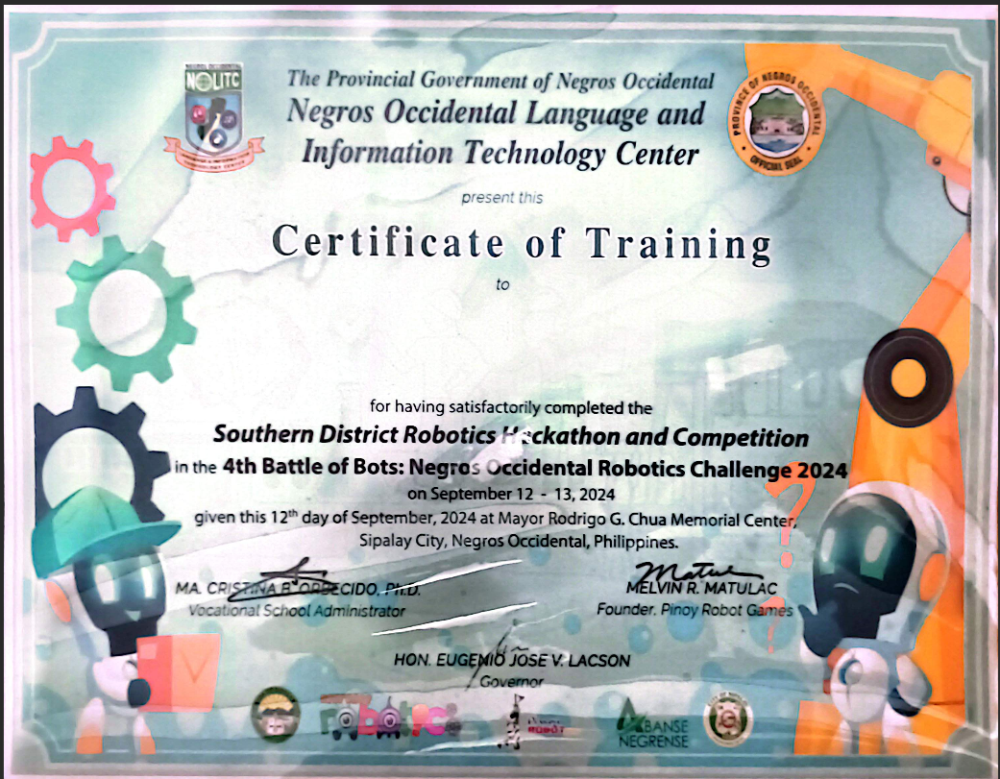
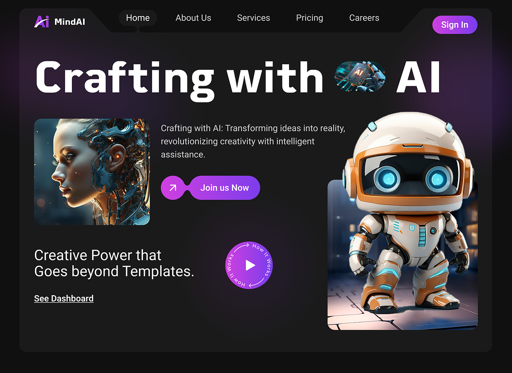
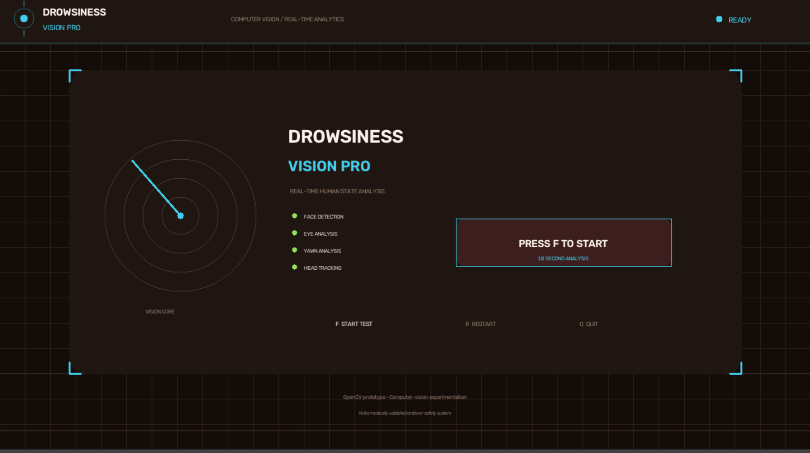

I’m a curious and determined student passionate about technology, engineering, web design, and innovation. I strive to learn, create, and improve with every challenge I face. “Per Aspera Ad Astra” — Through hardships to the stars.

I'm someone who enjoys exploring new ideas and turning my creativity into something meaningful. I’m interested in technology, web design, engineering, and innovation, and I enjoy learning new skills through different projects. I’m always willing to take on challenges, learn from my mistakes, and keep improving. My goal is to use my skills and passion to create things that can make a difference.
Read More
Creating and designing websites using HTML and CSS, including page layouts, navigation menus, animations, colors, and responsive designs.

Building and programming robotic systems using microcontrollers, sensors, and motors.

Basic programming using Arduino/C++ and Python.>

Using cameras and computer vision for detection
Developing and documenting research projects
Connecting sensors, motors, and microcontrollers
This project aims to develop a system that can identify different types of waste using a camera and an AI-based object detection model. The detected waste can then be classified and used to control servo motors for automatic segregation.

The project uses a laptop camera, Python, and OpenCV to analyze a person's face and determine whether the person shows signs of drowsiness. The system can analyze the person for a specific period and display a result such as “DROWSY” or “NOT DROWSY.”
I will focus on improving my skills in Mathematics, Physics, Science, and Technology. I will also participate in projects and activities that can help prepare me for an engineering career.
After senior high school, I plan to take a college degree related to Aerospace Engineering or Software engineering. I will work hard to build a strong foundation in engineering, progaramming, mathematics, and physics.
During college, I will continue developing skills in programming, web design, robotics, electronics, CAD, and engineering design. I will apply these skills through projects and practical activities.
I will participate in research projects, competitions, internships, and other engineering activities to gain practical experience and learn how engineering concepts are applied in real-world situations.
After completing my education, I will pursue opportunities in the aerospace industry or IT/cyber industry where I can apply my knowledge and skills to real-world engineering projects and programming projects.
I will decide whether to pursue a career in the aerospace industry or cyber industry, based on my interests, skills, and experiences. Whichever path I choose, I will continue learning, improving my skills, and working toward becoming a successful professional..
I enjoy creating innovative projects, working with technology, programming, electronics, and building practical solutions.
My interests include aviation, robotics, engineering, technology, music, making websites, and learning new things.
I have experience with programming, Arduino, ESP32, electronics, robotics, and developing research prototypes.